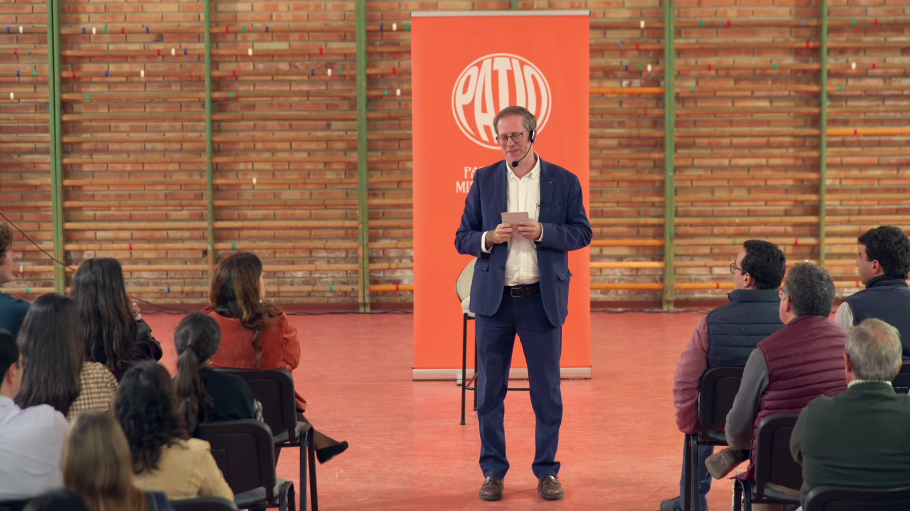

Patios presenciales
Delante de ti. Una historia, un público que pregunta sin miedo y después el afterpatio: música, comida y conversación.
Cada mes, en Córdoba.
No somos una simple idea, somos
Paso corto, mirada lejana.
Tus límites empiezan mucho antes de intentarlo. Por eso nace esta forma de ver la vida, para soñar a lo grande.

Queremos que salgas con ganas de hacer más con ella. Traemos a personas que han recorrido caminos, que se han equivocado y han llegado a lugares que alguna vez parecieron lejanos.

Delante de ti. Una historia, un público que pregunta sin miedo y después el afterpatio: música, comida y conversación.
Cada mes, en Córdoba.

Alrededor de una mesa. Una conversación sin prisa sobre amistad, liderazgo, educación, superación, emprendimiento y testimonios de vida.
Cada dos jueves, en YouTube y Spotify.
785 personas han venido a los tres primeros patios. Lo que publicamos suma 6,4 millones de visualizaciones y 2.150 personas siguen el proyecto desde la comunidad.